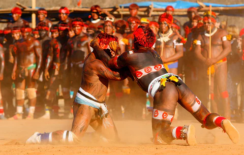

Huka-Huka

Arte Marcial Huka-Huka
Este estilo de combate foi criado pelo povo indígena Bakairi e povos do Xingu, localizados no Estado do Mato Grosso. O huka-huka é bastante praticado nessa região e representa uma das modalidades dos Jogos dos Povos Indígenas, competição esportiva criada no ano de 1996. A luta é praticada com os atletas de joelhos. No ritual, um homem chefe, que é considerado o dono da luta, vai até a parte central de uma arena e escolhe os adversários chamando-os pelo nome. Então os lutadores ficam frente a frente, ajoelham-se e giram de forma circular em sentido horário. Eles se encaram e começam a luta. O objetivo é levantar o oponente e depois levá-lo ao chão.
História
A Huka-huka tem sua origem na região Centro-Oeste brasileira, especificamente no estado do Mato Grosso (MT), na região de Paranatinga, mais precisamente nas terras Indígenas Bakairi1, Santana e do Xingu. A Terra Indígena Santana está localizada no município de Nobres, tendo seu nome originário de um afluente do Rio Novo, o qual desenha parte dos seus limites. Já a Terra Bakairi localiza-se em sua maioria no município de Paranatinga, à margem direita do rio Paranatinga, afluente do Tapajós.
A outra parte dela pertence ao município de Planalto da Serra, à margem esquerda do referido rio. E o Xingu localiza-se na região nordeste do Estado do Mato Grosso, na porção sul da Amazônia brasileira. Toda essa faixa de terra engloba diversas etnias, tais como: Bakairi, Aweti, Kalapalo, Kamaiurá, Kuikuro, Matipu, Mehinako, Nafukuá, Naruvôtu, Waurá e Yawalapiti. A Huka-huka faz parte do cotidiano destes povos, tendo na sua prática rituais que envolvem o corpo e a alma de seus praticantes, englobando filosofia e religião. O auge da manifestação do Huka-huka em tais localidades ocorre no Quarup2, que é uma cerimônia de homenagem aos mortos ilustres, feita pelos povos indígenas da região do Xingu. Não obstante o nome Huka-huka faz alusão ao som dos lutadores imitando os esturros da onça. Para se tornar um lutador de Huka-huka o jovem, de ambos os sexos, precisa passar por um processo de reclusão. Inicialmente, o indivíduo é orientado e recordado pelo pai sobre a importância da reclusão para sua vida e como ele deve se comportar quando chegar tal momento. Acredita-se que o momento da reclusão ajuda a construir a personalidade do jovem, e o torna um bom lutador. A reclusão se inicia com a chegada dos sinais da puberdade, observada através da mudança de voz e crescimento dos órgãos genitais. A partir de então ocorre o preparo dos lutadores, de ambos os sexos, muito cedo, a partir dos doze anos de idade, durando aproximadamente seis anos, período no qual o indígena é preparado espiritualmente e fisicamente para os futuros combates. Os treinos são diários e direcionam-se para o aprimoramento da técnica, o desenvolvimento da força física, bem como a aprendizagem da mitologia e história da Huka-huka